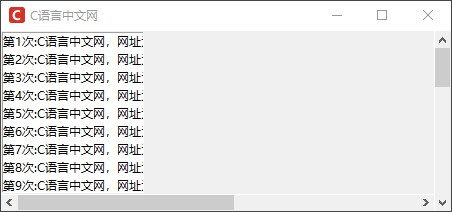

Tkinter Scrollbar滚动条控件
Scrollbar 控件常用于创建一个水平或者垂直的滚动条，通常情况下，Scrollbar 控件可以与 Listbox、Text、Canvas 以及 Entry 等控件一起使。
滚动条控件是 GUI 程序中经常使用的一种控件类型，它主要用来控制控件区域的可见范围，比如当 Text 控件的文本内容非常多时，为了方便用户阅读，可以给 Text 控件增加滚动条，用户只需拖动滚动条就能完成内容的阅读。
Scrollbar 控件的常用属性，如下表所示：
下面是介绍了 Scrollbar 控件常用的函数：
下面看一组简单的示例：
滚动条控件是 GUI 程序中经常使用的一种控件类型，它主要用来控制控件区域的可见范围，比如当 Text 控件的文本内容非常多时，为了方便用户阅读，可以给 Text 控件增加滚动条，用户只需拖动滚动条就能完成内容的阅读。
Scrollbar 控件的常用属性，如下表所示：
| 属性 | 说明 |
|---|---|
| activebackground | 指定当鼠标在上方飘过的时候滑块和箭头的背景颜色，默认由系统决定 |
| activerelief | 指定当鼠标在滑块上方飘过时滑块的样式，默认值是 "raised"，其他可选值有 "flat"，"sunken"，"groove"，"ridge" |
| background(bg) | 指定背景颜色，默认值由系统指定 |
| borderwidth(bd) | 指定边框宽度，默认值是 0 |
| command | 当滚动条更新时回调的函数，通常指定对应组件的 xview() 或 yview() 方法 |
| cursor | 指定当鼠标在上方飘过的时的鼠标样式，默认值由系统指定 |
| elementborderwidth |
1. 指定滚动条和箭头的边框宽度 2. 默认值是 -1（表示使用 borderwidth 选项的值） |
| jump |
1. 指定当用户拖拽滚动条时的行为 2. 默认值为 False，滚动条的任何一丝变动都会即刻调用 command 指定的回调函数 3. 设置为 True 则当用户松开鼠标才调用 |
| orient | 指定绘制 "horizontal"（垂直滚动条）还是 "vertical"（水平滚动条），默认值是 VERTICAL |
| repeatdelay | 该选项指定鼠标左键点击滚动条凹槽的响应时间，默认值是 300（毫秒） |
| repeatinterval | 该选项指定鼠标左键紧按滚动条凹槽时的响应间隔，默认值是 100（毫秒） |
| takefocus | 指定使用 Tab 键可以将焦点移到该 Scrollbar 组件上，默认为开启，可以将该选项设置为 False 避免焦点在此组件上 |
| troughcolor | 指定凹槽的颜色，默认由系统指定 |
| width | 指定滚动条的宽度,默认值是 16px |
下面是介绍了 Scrollbar 控件常用的函数：
| 属性 | 说明 |
|---|---|
| activate(element) |
1. 显示 element 参数指定的元素的背景颜色和样式; 2. element 参数可以设置为："arrow1"（箭头1），"arrow2"（箭头2）或 "slider"（滑块） |
| delta(deltax, deltay) |
1. 给定一个鼠标移动的范围 deltax 和 deltay，然后该方法返回一个浮点类型的值（范围 -1.0 ~ 1.0） 2. 注意：deltax 表示水平移动量，deltay 表示垂直移动量 |
| fraction(x, y) | 给定一个像素坐标 (x, y)，该方法返回最接近给定坐标的滚动条位置。 |
| get() | 返回当前滑块的位置 (a, b)，其中 a 值表示当前滑块的顶端或左端的位置，b 值表示当前滑块的底端或右端的位置。 |
| identify(x, y) |
1. 返回一个字符串表示指定位置下（如果有的话）的滚动条部件， 2. 返回值可以是："arrow1"（箭头1），"arrow2"（箭头2）、"slider"（滑块）或 ""（空） |
| set(*args) |
1. 设置当前滚动条的位置 2. 该方法有两个参数即 (first, last)，其中 first 表示当前滑块的顶端或左端的位置，last 表示当前滑块的底端或右端的位置（范围 0.0 ~ 1.0） |
下面看一组简单的示例：
import tkinter as tk
root = tk.Tk()
root.title("C语言中文网")
root.geometry('450x180+300+200')
root.iconbitmap('C:/Users/Administrator/Desktop/C语言中文网logo.ico')
# 创建一个滚动条控件，默认为垂直方向
sbar1= tk.Scrollbar(root)
# 将滚动条放置在右侧，并设置当窗口大小改变时滚动条会沿着垂直方向延展
sbar1.pack(side=RIGHT, fill=Y)
# 创建水平滚动条，默认为水平方向,当拖动窗口时会沿着X轴方向填充
sbar2 = Scrollbar (root, orient=HORIZONTAL)
sbar2.pack(side=BOTTOM, fill=X)
# 创建列表框控件,并添加两个滚动条（分别在垂直和水平方向），使用 set() 进行设置
mylist = tk.Listbox(root,xscrollcommand = sbar2.set,yscrollcommand = sbar1.set)
for i in range(30):
mylist.insert(END,'第'+ str(i+1)+'次:'+'C语言中文网，网址为：c.biancheng.net'+ '\n' )
# 当窗口改变大小时会在X与Y方向填满窗口
mylist.pack(side=LEFT,fill = BOTH)
# 使用 command 关联控件的 yview、xview方法
sbar1.config(command =mylist.yview)
sbar2.config(command = mylist.xview)
# 显示主窗口
root.mainloop()
程序运行结果：

图1：Scrollbar控件
图1：Scrollbar控件
通过滑动滚动条可以浏览列表框中的内容，垂直方向的滚动条沿着上下浏览，水平方向的滚动条则沿着左右方向浏览。
关注公众号「站长严长生」，在手机上阅读所有教程，随时随地都能学习。内含一款搜索神器，免费下载全网书籍和视频。

微信扫码关注公众号